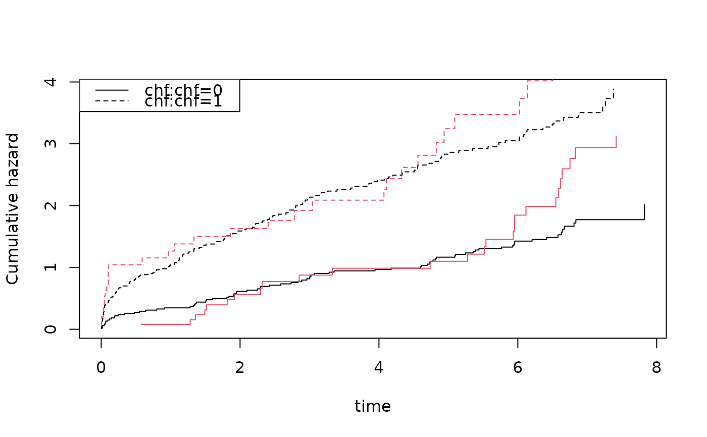
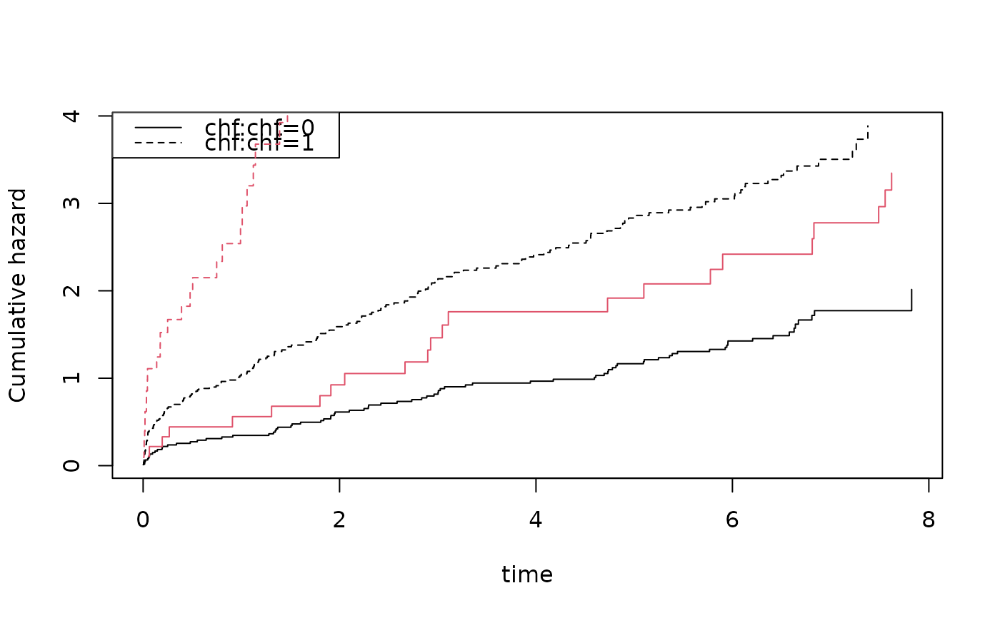

Simulates data that looks like fit from Cox model. Censor data automatically for highest value of the event times by using cumulative hazard.
Usage
sim.phreg(
cox,
n,
data = NULL,
Z = NULL,
rr = NULL,
strata = NULL,
entry = NULL,
extend = NULL,
cens = NULL,
rrc = NULL,
...
)Arguments
- cox
output form coxph or cox.aalen model fitting cox model.
- n
number of simulations.
- data
to extract covariates for simulations (draws from observed covariates).
- Z
give design matrix instead of data
- rr
possible vector of relative risk for cox model.
- strata
possible vector of strata
- entry
delayed entry variable for simulation.
- extend
to extend possible stratified baselines to largest end-point given then takes average rate of in simulated data from cox model.
- cens
specifies censoring model, if "is.matrix" then uses cumulative hazard given, if "is.scalar" then uses rate for exponential, and if not
- rrc
possible vector of relative risk for cox-type censoring.
- ...
arguments for rchaz, for example entry-time.
Examples
library(mets)
data(sTRACE)
nsim <- 100
coxs <- phreg(Surv(time,status==9)~strata(chf)+vf+wmi,data=sTRACE)
set.seed(100)
sim3 <- sim.phreg(coxs,nsim,data=sTRACE)
head(sim3)
#> entry time status rr id time status chf vf wmi orig.id
#> 1 0 0.0005400588 1 0.9366566 1 0.2452262 9 1 1 0.4 202
#> 45 0 7.8250000000 0 0.2405435 2 7.1560000 0 0 0 1.6 358
#> 46 0 7.8250000000 0 0.2405435 3 6.2800000 0 0 0 1.6 112
#> 47 0 2.3192112736 1 0.2012996 4 7.5980000 0 0 0 1.8 499
#> 48 0 2.8507169261 1 0.4104366 5 6.4740000 0 0 0 1.0 473
#> 49 0 7.8250000000 0 0.2874382 6 6.1510000 0 0 0 1.4 206
cc <- phreg(Surv(time,status)~strata(chf)+vf+wmi,data=sim3)
cbind(coxs$coef,cc$coef)
#> [,1] [,2]
#> vf 0.2907750 1.795377
#> wmi -0.8905339 -1.100672
plot(coxs,col=1); plot(cc,add=TRUE,col=2)

Z <- sim3[,c("vf","chf","wmi")]
strata <- sim3[,c("chf")]
rr <- exp(as.matrix(Z[,-2]) %*% coef(coxs))
sim4 <- sim.phreg(coxs,nsim,data=NULL,rr=rr,strata=strata)
sim4 <- cbind(sim4,Z)
cc <- phreg(Surv(time,status)~strata(chf)+vf+wmi,data=sim4)
cbind(coxs$coef,cc$coef)
#> [,1] [,2]
#> vf 0.2907750 0.05398059
#> wmi -0.8905339 -1.25463072
plot(coxs,col=1); plot(cc,add=TRUE,col=2)
